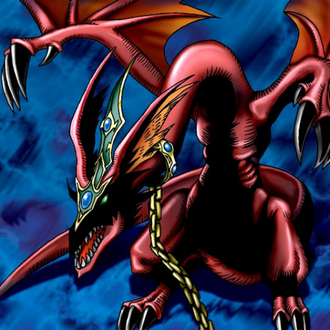

Harpie's Pet Dragon

STATS
ATK: 2000
DEF: 2500DECK COST
Deck Cost per Card: 45Fusion List (9 Possible Fusions)
- Harpie's Pet Dragon + Ancient Tree of Enlightenment = B. Dragon Jungle King
- Harpie's Pet Dragon + Bolt Escargot = Twin-Headed Thunder Dragon
- Harpie's Pet Dragon + Dark Plant = B. Dragon Jungle King
- Harpie's Pet Dragon + Laughing Flower = B. Dragon Jungle King
- Harpie's Pet Dragon + Queen of Autumn Leaves = B. Dragon Jungle King
- Harpie's Pet Dragon + Rainbow Flower = B. Dragon Jungle King
- Harpie's Pet Dragon + Sanga of the Thunder = Twin-Headed Thunder Dragon
- Harpie's Pet Dragon + Thunder Dragon = Twin-Headed Thunder Dragon
- Harpie's Pet Dragon + Thunder Nyan Nyan = Twin-Headed Thunder Dragon